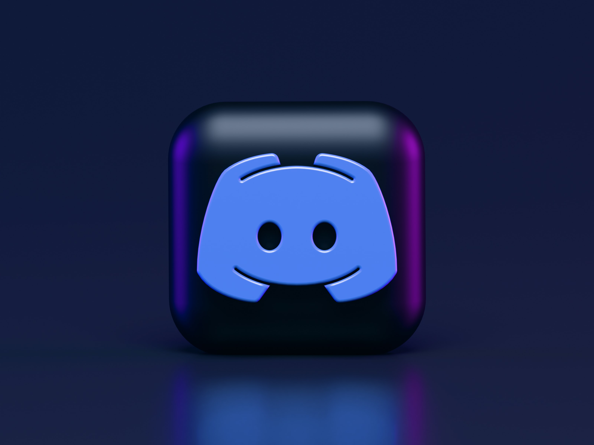
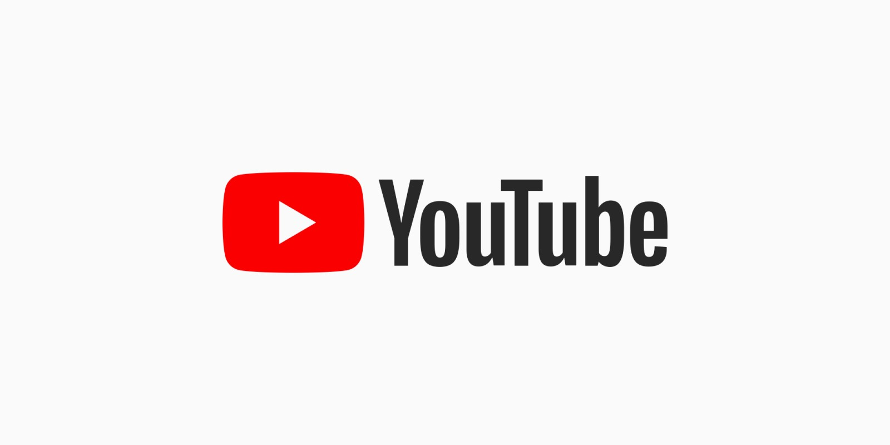
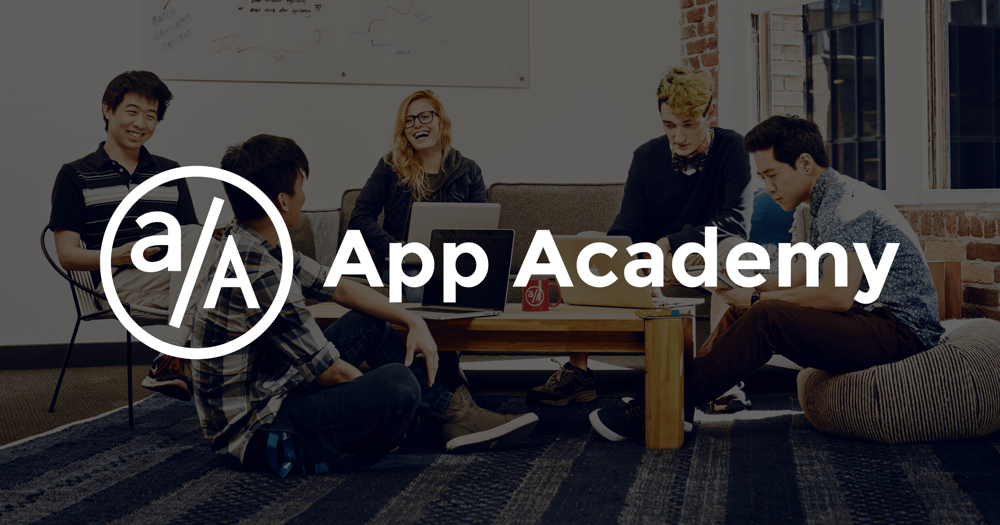

My Top 5 Websites
Web Geek
I love visiting various websites. There's not a single day where I don't browse the internet. Internet has been part of my daily routine already. Here are some of the websites I frequently love visiting and using.
-
Discord

One thing I like about Discord is you can find a circle to your fitting. I always join Discord groups about Japanese learning and software engineering. Through Discord, I feel not isolated as I find people with same hobbies as mine while being able to maintain my anonymity.
-
Youtube

I browse Youtube every day. Everytime I want to feel entertained, I always open Youtube. Youtube is also great for learning stuff. But it can sometimes kill productivity as browsing Youtube videos is pretty addictive.
-
Google

Google is my best friend whenever I feel stuck at a coding question. It's my best friend whenever I'm in pinch mode. I mean, who doesn't love google? It's the programmer's best friend after all.
-
App Academy Open

My number 1 website when learning web development. I love open app academy. Their lessons are very dense and I learn I lot. I can't express how much I love this website. Web development has been more achievable thanks for discovering this.
-
Facebook

I really don't like using Facebook and I try to stay away with it as much as possible. However, Facebook Messenger is really important for me as it is my only means of communication to people that I know. I use messenger pretty much everyday.